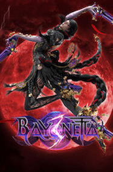

Bayonetta 3 Review- A Fantastically Flawed Action Game

Bayonetta 3 is an ambitious action game that had many ideas going for it. The majority of the game is fantastic, including its core combat. Due to the limitations of the Nintendo Switch and behind the scenes drama some of its ideas were executed poorly. That doesn't disregard it from being a great action game though.
The plot in Bayonetta 3 focusses on a multiverse of Bayonetta's. This plot is the most convoluted out of the entire series which can cause a tone of confusion. The characters are not as fleshed out as they once were and there were basically no arcs. Bayonetta is not voiced by Hellena Taylor and is instead does voiced by Jennifer Hale who does a good job at Bayonetta, but not as good as the original. The overall plot feels slightly bland and is not as exciting or interesting as its predecessors. It has a fantastic climatic and emotional ending and the cutscenes are still well choreographed, but the overall plot does not compare to the other games in the series.
Combat has be redefined in Bayonetta 3, as it doesn't allow for players to have different hand and feet weapons, which was a slight disappointment, but expands upon core combat in various ways. There are many unique and amusing weapons types that have different combos and demon masquerade and traversal techniques. There are also many different demons that you can summon quickly, giving you an option of three at a time. Each technique, weapon, demon masquerade and summon give variety and freedom of expression to combat, like both its predecessors did. There is also a second playable character Viola who instead of dodging by witch time blocks and parries enemy attacks. She doesn't have as much variety as Bayonetta, but she still is fun to play as. The soundtrack is still great and remains to be so throughout the series. The exploration feels like you have to use the gimmicks the game gives you and even though environments are varied due to the limitations of the Switch they look bland, as well as ugly sometimes. The bosses and enemy types and are not as interesting as the last 2 games and just feel like blue blobs. Most bosses and enemies are still fun to fight against but the detail of layers peeling off as you beat an enemy isn't as obvious and is not as detailed on some returning enemies in one time fights. Overall, the gameplay is still great, but not as refined as the first 2 Bayonetta games.
Bayonetta 3 is an ambitious game that is still fantastic to play, but falls short of both its predecessors. It innovates the Bayonetta formula in many ways but due multiple issues it falls short of its complete potential. There is no denying that this game is great, but it is not the masterpiece that the first two games are.